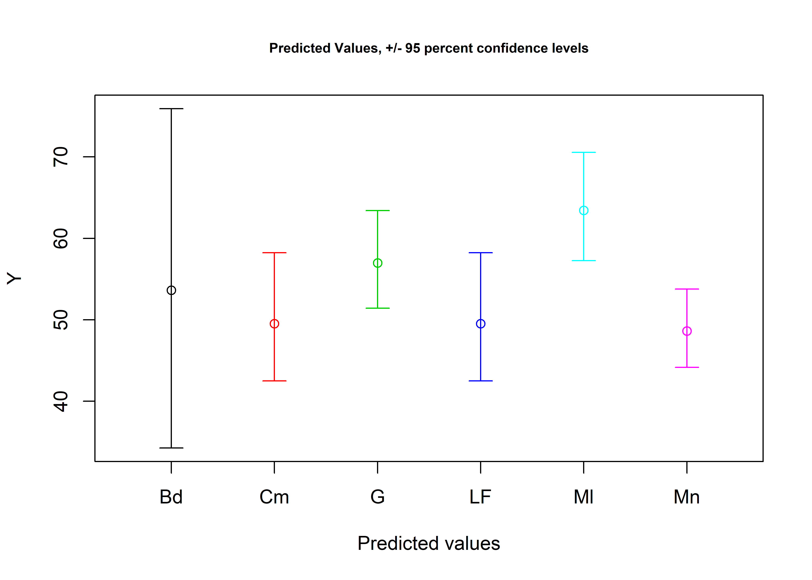
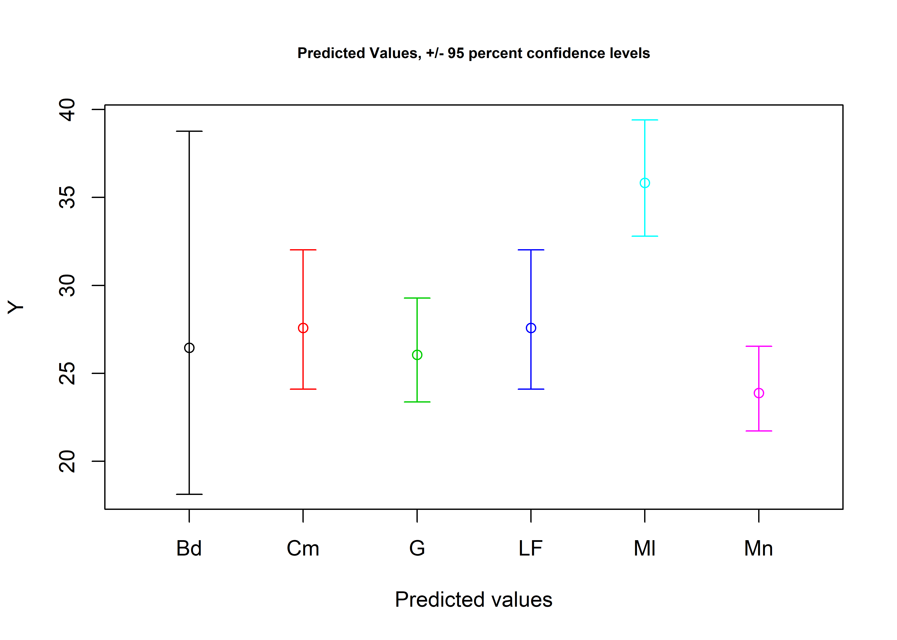
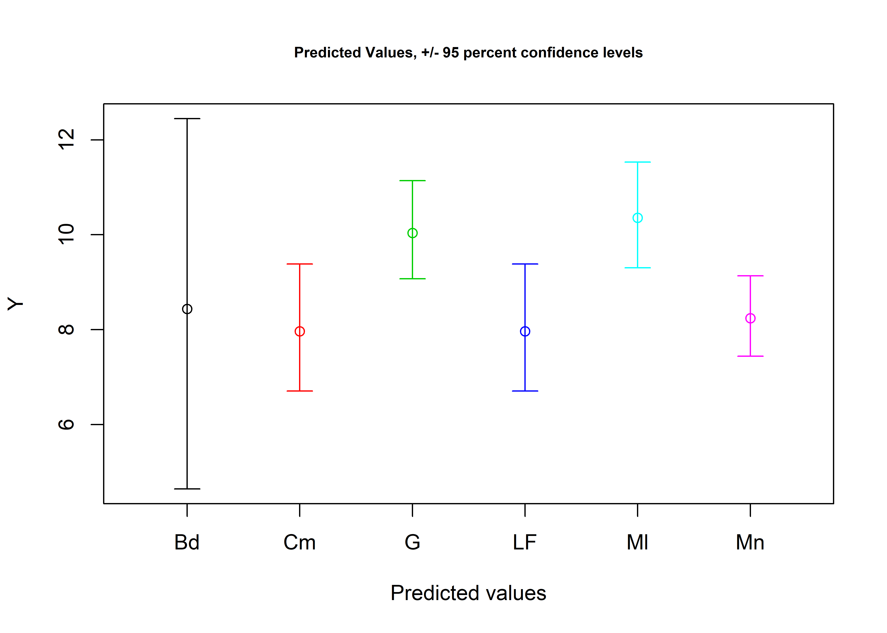
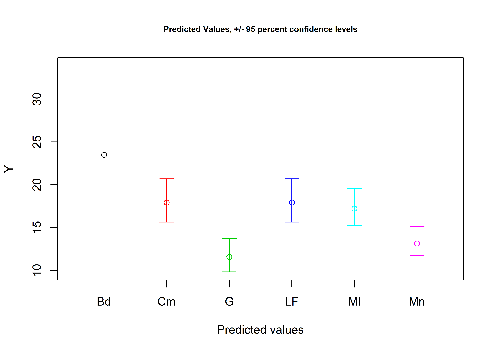

Chapter 6 Cooper and Means type-varieties
# install required analysis packages
#devtools::install_github("tidyverse/tidyverse")
#devtools::install_github("vqv/ggbiplot")
#devtools::install_github("mlcollyer/RRPP")
#devtools::install_github("kassambara/ggpubr")
#devtools::install_github('sinhrks/ggfortify')
# load libraries
library(tidyverse)
library(ggbiplot)
library(RRPP)
library(ggpubr)
library(ggfortify)
library(cluster)# set working directory
setwd(getwd())
# load data
data<-read.csv("garymorphlm.csv",header = TRUE, as.is=TRUE)6.1 Gary varieties proposed by Schambach (1998)
# reported length by variety
schambl<-data.frame(Name=c('var.Gary','var.Malvern','var.LeFlore','var.Bodcaw','var.Manice','var.Camden'),
Length=c(51,43,43,40,36,34), # in mm
end=c(73,72,80,60,57,73) # in mm
)
length<-ggplot(schambl,aes(x=Length,xend=end,y=Name,yend=Name,color=Name)) +
geom_segment(size=2) +
scale_color_brewer(palette = "Set1") +
theme(legend.position = "none")
# reported width by variety
schambw<-data.frame(Name=c('var.Gary','var.Malvern','var.LeFlore','var.Bodcaw','var.Manice','var.Camden'),
Width=c(31,23,25,21,22,14), # in mm
end=c(45,33,54,36,41,35) # in mm
)
width<-ggplot(schambw,aes(x=Width,xend=end,y=Name,yend=Name,color=Name)) +
geom_segment(size=2) +
scale_color_brewer(palette = "Set1") +
theme(legend.position = "none")
# reported thickness by variety
schambth<-data.frame(Name=c('var.Gary','var.Malvern','var.LeFlore','var.Bodcaw','var.Manice','var.Camden'),
Thickness=c(6,7,5,5,6,6), # in mm
end=c(11,13,13,12,9,12) # in mm
)
thickness<-ggplot(schambth,aes(x=Thickness,xend=end,y=Name,yend=Name,color=Name)) +
geom_segment(size=2) +
scale_color_brewer(palette = "Set1") +
theme(legend.position = "none")
# reported stem length by variety
schambstl<-data.frame(Name=c('var.Gary','var.Malvern','var.LeFlore','var.Bodcaw','var.Manice','var.Camden'),
StemLength=c(15,11,11,11,10,9), # in mm
end=c(29,23,24,24,17,22) # in mm
)
stemlength<-ggplot(schambstl,aes(x=StemLength,xend=end,y=Name,yend=Name,color=Name)) +
geom_segment(size=2) +
scale_color_brewer(palette = "Set1") +
theme(legend.position = "none")
# reported stem width by variety
schambstw<-data.frame(Name=c('var.Gary','var.Malvern','var.LeFlore','var.Bodcaw','var.Manice','var.Camden'), # var.CamdenB-stemlength not listed in text
StemWidth=c(20,17,13,15,9,12), # in mm
end=c(28,25,33,24,20,24) # in mm
)
stemwidth<-ggplot(schambstw,aes(x=StemWidth,xend=end,y=Name,yend=Name,color=Name)) +
geom_segment(size=2) +
scale_color_brewer(palette = "Set1") +
theme(legend.position = "none")
# render figure
schambachfig<-ggarrange(length,width,thickness,stemlength,stemwidth,
labels = c("a","b","c","d","e"),
ncol = 2, nrow = 3)
schambachfig
Figure 6.1: Gantt charts illustrating the range of linear measurements for each type-variety reported by Schambach (1998).
6.2 Assign Gary type-varieties proposed by Ford and Webb (1956)
# subset data to include only those observations from Cooper and Means
cprmnsmx<-subset(data,Site %in% c("Cooper","Means"),select=maxl:Site)
# assign varieties based upon reported metrics in Schambach (1998)
slcheck1 <- cprmnsmx$maxl >= 51 & cprmnsmx$maxl <= 73
slcheck2 <- cprmnsmx$maxl >= 43 & cprmnsmx$maxl <= 72
slcheck3 <- cprmnsmx$maxl >= 43 & cprmnsmx$maxl <= 80
slcheck4 <- cprmnsmx$maxl >= 40 & cprmnsmx$maxl <= 60
slcheck5 <- cprmnsmx$maxl >= 36 & cprmnsmx$maxl <= 57
slcheck6 <- cprmnsmx$maxl >= 34 & cprmnsmx$maxl <= 73
swcheck1 <- cprmnsmx$maxw >= 22 & cprmnsmx$maxw <= 31
swcheck2 <- cprmnsmx$maxw >= 23 & cprmnsmx$maxw <= 33
swcheck3 <- cprmnsmx$maxw >= 25 & cprmnsmx$maxw <= 54
swcheck4 <- cprmnsmx$maxw >= 21 & cprmnsmx$maxw <= 36
swcheck5 <- cprmnsmx$maxw >= 22 & cprmnsmx$maxw <= 41
swcheck6 <- cprmnsmx$maxw >= 14 & cprmnsmx$maxw <= 35
stcheck1 <- cprmnsmx$maxth >= 6 & cprmnsmx$maxth <= 11
stcheck2 <- cprmnsmx$maxth >= 7 & cprmnsmx$maxth <= 13
stcheck3 <- cprmnsmx$maxth >= 5 & cprmnsmx$maxth <= 13
stcheck4 <- cprmnsmx$maxth >= 5 & cprmnsmx$maxth <= 12
stcheck5 <- cprmnsmx$maxth >= 6 & cprmnsmx$maxth <= 9
stcheck6 <- cprmnsmx$maxth >= 6 & cprmnsmx$maxth <= 12
sslcheck1 <- cprmnsmx$maxstl >= 15 & cprmnsmx$maxstl <= 29
sslcheck2 <- cprmnsmx$maxstl >= 11 & cprmnsmx$maxstl <= 23
sslcheck3 <- cprmnsmx$maxstl >= 11 & cprmnsmx$maxstl <= 24
sslcheck4 <- cprmnsmx$maxstl >= 11 & cprmnsmx$maxstl <= 24
sslcheck5 <- cprmnsmx$maxstl >= 10 & cprmnsmx$maxstl <= 17
sslcheck6 <- cprmnsmx$maxstl >= 9 & cprmnsmx$maxstl <= 22
sswcheck1 <- cprmnsmx$maxstw >= 20 & cprmnsmx$maxstw <= 28
sswcheck2 <- cprmnsmx$maxstw >= 17 & cprmnsmx$maxstw <= 25
sswcheck3 <- cprmnsmx$maxstw >= 13 & cprmnsmx$maxstw <= 33
sswcheck4 <- cprmnsmx$maxstw >= 15 & cprmnsmx$maxstw <= 24
sswcheck5 <- cprmnsmx$maxstw >= 12 & cprmnsmx$maxstw <= 24
sswcheck6 <- cprmnsmx$maxstw >= 9 & cprmnsmx$maxstw <= 20
cprmnsmx$tv2 <- "Gnv" # = Gary points (no variety)
cprmnsmx$tv2 <- ifelse(slcheck1 & swcheck1 & stcheck1 & sslcheck1 & sswcheck1, "G", cprmnsmx$tv2)
cprmnsmx$tv2 <- ifelse(slcheck2 & swcheck2 & stcheck2 & sslcheck2 & sswcheck2, "Ml", cprmnsmx$tv2)
cprmnsmx$tv2 <- ifelse(slcheck3 & swcheck3 & stcheck3 & sslcheck3 & sswcheck3, "LF", cprmnsmx$tv2)
cprmnsmx$tv2 <- ifelse(slcheck4 & swcheck4 & stcheck4 & sslcheck4 & sswcheck4, "Bd", cprmnsmx$tv2)
cprmnsmx$tv2 <- ifelse(slcheck5 & swcheck5 & stcheck5 & sslcheck5 & sswcheck5, "Mn", cprmnsmx$tv2)
cprmnsmx$tv2 <- ifelse(slcheck6 & swcheck6 & stcheck6 & sslcheck6 & sswcheck6, "Cm", cprmnsmx$tv2)
tv2<-cprmnsmx$tv2
tv2## [1] "Gnv" "Gnv" "Gnv" "LF" "LF" "LF" "LF" "LF" "LF" "LF" "LF" "Bd" "Bd"
## [14] "Bd" "Cm" "Bd" "Cm" "LF" "LF" "LF" "LF" "Gnv" "LF" "Cm" "Cm" "Cm"
## [27] "Cm" "Cm" "Cm" "Cm" "Cm" "Cm" "Gnv" "Gnv" "Cm" "Gnv" "Cm" "Cm" "Gnv"
## [40] "Cm" "Cm" "Cm" "Cm" "Cm" "Gnv" "Cm" "Cm" "Gnv" "Cm" "Gnv" "Gnv" "Cm"
## [53] "Cm" "Cm" "Cm" "Cm" "Cm" "Gnv" "Cm" "Cm" "Cm" "Gnv" "Cm" "Cm" "Gnv"
## [66] "Gnv" "Cm" "Cm" "Cm" "Gnv" "Gnv" "Cm" "Cm" "Cm" "Gnv" "LF" "Cm" "Cm"
## [79] "Cm" "Cm" "Gnv" "Cm" "Cm" "Cm" "Gnv" "Gnv" "Cm" "Gnv" "LF" "Cm" "Cm"
## [92] "Gnv" "Cm" "Cm" "Cm" "Cm" "Cm" "Cm" "Cm" "LF" "LF" "Cm" "Cm" "Mn"
## [105] "Cm" "Cm" "Cm" "Cm" "Cm" "Cm" "Cm" "Cm" "Cm" "Cm" "Cm" "Cm" "G"
## [118] "LF" "Cm" "Cm" "Cm" "Cm" "Bd" "LF" "Cm" "Bd" "Cm" "Cm" "Cm" "Cm"
## [131] "Cm" "Cm" "Cm" "Cm" "Gnv" "Cm" "Cm" "Gnv" "Cm" "Cm" "Cm" "Gnv" "Bd"
## [144] "Cm" "Cm" "Cm" "Gnv" "Cm"6.3 Boxplots of Schambach’s (1998) type-varieties for Gary dart points from Cooper and Means
# boxplot of maximum length
cprmaxl<-ggplot(cprmnsmx,aes(x=tv2,y=maxl,color=tv2)) +
geom_boxplot() +
geom_dotplot(binaxis = 'y',stackdir = 'center',dotsize = 0.3) +
scale_color_brewer(palette = "Set1") +
theme(legend.position = "none")
# boxplot of maximum width
cprmaxw<-ggplot(cprmnsmx,aes(x=tv2,y=maxw,color=tv2)) +
geom_boxplot() +
geom_dotplot(binaxis = 'y',stackdir = 'center',dotsize = 0.3)+
scale_color_brewer(palette = "Set1") +
theme(legend.position = "none")
# boxplot of maximum thickness
cprmaxth<-ggplot(cprmnsmx,aes(x=tv2,y=maxth,color=tv2)) +
geom_boxplot() +
geom_dotplot(binaxis = 'y',stackdir = 'center',dotsize = 0.3)+
scale_color_brewer(palette = "Set1") +
theme(legend.position = "none")
# boxplot of maximum stem length
cprmaxstl<-ggplot(cprmnsmx,aes(x=tv2,y=maxstl,color=tv2)) +
geom_boxplot() +
geom_dotplot(binaxis = 'y',stackdir = 'center',dotsize = 0.3)+
scale_color_brewer(palette = "Set1") +
theme(legend.position = "none")
# boxplot of maximum thickness
cprmaxstw<-ggplot(cprmnsmx,aes(x=tv2,y=maxstw,color=tv2)) +
geom_boxplot() +
geom_dotplot(binaxis = 'y',stackdir = 'center',dotsize = 0.3)+
scale_color_brewer(palette = "Set1") +
theme(legend.position = "none")
# render figure
cprfigure<-ggarrange(cprmaxl,cprmaxw,cprmaxth,cprmaxstl,cprmaxstw,
labels = c("a","b","c","d","e"),
ncol = 3, nrow = 2)## `stat_bindot()` using `bins = 30`. Pick better value with `binwidth`.
## `stat_bindot()` using `bins = 30`. Pick better value with `binwidth`.
## `stat_bindot()` using `bins = 30`. Pick better value with `binwidth`.
## `stat_bindot()` using `bins = 30`. Pick better value with `binwidth`.
## `stat_bindot()` using `bins = 30`. Pick better value with `binwidth`.Figure 6.2: Boxplots for a, maximum length; b, width; c, thickness; d, stem length; and e, stem width for Gary dart points from the Cooper and Means sites.
6.4 Density plots for variables by type-varieties
6.4.1 Density plot for maximum length by tv2
# define variables in cooper/means subset
cm.maxl<-cprmnsmx$maxl
cm.maxw<-cprmnsmx$maxw
cm.maxth<-cprmnsmx$maxth
cm.maxstl<-cprmnsmx$maxstl
cm.maxstw<-cprmnsmx$maxstw
cm.tv2<-cprmnsmx$tv2
# density plot by maxl by tv1
ggplot(cprmnsmx, aes(x=cm.maxl, fill = cm.tv2)) +
geom_density(alpha = .4) +
scale_color_brewer(palette = "Set1") +
xlim(0,150) #full range of variation included in the linear measurements## Warning: Groups with fewer than two data points have been dropped.
## Warning: Groups with fewer than two data points have been dropped.Figure 6.3: Density plot for maximum length at Coooper and Means.
6.4.2 Density plot for maximum width by tv2
# density plot by maxl by tv1
ggplot(cprmnsmx, aes(x=cm.maxw, fill = cm.tv2)) +
geom_density(alpha = .4) +
scale_color_brewer(palette = "Set1") +
xlim(0,75) #full range of variation included in the linear measurements## Warning: Groups with fewer than two data points have been dropped.
## Warning: Groups with fewer than two data points have been dropped.Figure 6.4: Density plot for maximum width by tv2 at Coooper and Means.
6.4.3 Density plot for maximum thickness by tv2
# density plot by maxl by tv1
ggplot(cprmnsmx, aes(x=cm.maxth, fill = cm.tv2)) +
geom_density(alpha = .4) +
scale_color_brewer(palette = "Set1") +
xlim(0,25) #full range of variation included in the linear measurements## Warning: Groups with fewer than two data points have been dropped.
## Warning: Groups with fewer than two data points have been dropped.Figure 6.5: Density plot for maximum thickness by tv2 at Coooper and Means.
6.4.4 Density plot for maximum stem length by tv2
# density plot by maxl by tv1
ggplot(cprmnsmx, aes(x=cm.maxstl, fill = cm.tv2)) +
geom_density(alpha = .4) +
scale_color_brewer(palette = "Set1") +
xlim(0,35) #full range of variation included in the linear measurements## Warning: Groups with fewer than two data points have been dropped.
## Warning: Groups with fewer than two data points have been dropped.Figure 6.6: Density plot for maximum stem length by tv2 at Coooper and Means.
6.4.5 Density plot for maximum stem width by tv2
# density plot by maxl by tv1
ggplot(cprmnsmx, aes(x=cm.maxstw, fill = cm.tv2)) +
geom_density(alpha = .4) +
scale_color_brewer(palette = "Set1") +
xlim(0,40) #full range of variation included in the linear measurements## Warning: Groups with fewer than two data points have been dropped.
## Warning: Groups with fewer than two data points have been dropped.Figure 6.7: Density plot for maximum stem width by tv2 at Coooper and Means.
6.5 Principal Components Analysis for Schambach’s (1998) type-varieties at Cooper and Means
#pca
df<-cprmnsmx[c(1:5)]
tv2pca<-autoplot(prcomp(df),data = cprmnsmx, colour = 'tv2',
loadings = TRUE, loadings.colour = 'blue',
loadings.label = TRUE,loadings.label.size = 3,
frame = TRUE)
#render figure
tv2pcaFigure 6.8: PCA by Gary type-varieties reported by Schambach (1998).
6.6 Analyses of Variance (ANOVA) for linear variables ~ Schambach’s (1998) type-varieties
6.6.1 Maximum length by type-variety at Cooper and Means
# anova = maximum length ~ tv2
t2ml<-lm.rrpp(cm.maxl ~ cm.tv2, SS.type = "I",data = cprmnsmx,iter = 9999,print.progress = FALSE)
anova(t2ml)##
## Analysis of Variance, using Residual Randomization
## Permutation procedure: Randomization of null model residuals
## Number of permutations: 10000
## Estimation method: Ordinary Least Squares
## Sums of Squares and Cross-products: Type I
## Effect sizes (Z) based on F distributions
##
## Df SS MS Rsq F Z Pr(>F)
## cm.tv2 5 4337.9 867.59 0.19986 7.0939 2.9423 0.0106 *
## Residuals 142 17366.7 122.30 0.80014
## Total 147 21704.7
## ---
## Signif. codes: 0 '***' 0.001 '**' 0.01 '*' 0.05 '.' 0.1 ' ' 1
##
## Call: lm.rrpp(f1 = cm.maxl ~ cm.tv2, iter = 9999, SS.type = "I", data = cprmnsmx,
## print.progress = FALSE)# visualise model predictions for maximum length ~ type-variety at cooper and means
cm.tvDF<-data.frame(cm.tv2 = c("G","Ml","LF","Bd","Mn","Cm"))
rownames(cm.tvDF)<-c("G","Ml","LF","Bd","Mn","Cm")
cmPreds<-predict(t2ml,cm.tvDF)
cmPreds##
## Linear Model fit with lm.rrpp
##
## Number of predictions: 6
## Confidence level: 95 %
## Number of bootstrap permutations: 10000
##
## Predicted values:
##
## [,1]
## G 53.64173
## Ml 49.52677
## LF 56.98046
## Bd 49.52677
## Mn 63.43066
## Cm 48.61412
##
##
## 95 % Lower confidence limits:
##
## [,1]
## G 34.25843
## Ml 42.49537
## LF 51.42942
## Bd 42.49537
## Mn 57.25673
## Cm 44.15031
##
##
## 95 % Upper confidence limits:
##
## [,1]
## G 75.92356
## Ml 58.23564
## LF 63.41910
## Bd 58.23564
## Mn 70.54140
## Cm 53.77289
# pairwise comparisons not possible until more than one specimen falls within each category
# pairwise comparison of LS means = which type-varieties differ?
#cm.ml<-pairwise(t2ml, groups = cprmnsmx$tv2)
#summary(cm.ml, confidence = 0.95, test.type = "dist")
# correlation between mean vectors (angles in degrees)
#summary(cm.ml, confidence = 0.95, test.type = "VC", angle.type = "deg")
# pairwise distances between variances = standardization?
#summary(cm.ml, confidence = 0.95, test.type = "var")6.6.2 Maximum width by type-variety at Cooper and Means
# anova = maximum width ~ tv2
t2mw<-lm.rrpp(cm.maxw ~ cm.tv2, SS.type = "I",data = cprmnsmx,iter = 9999,print.progress = FALSE)
anova(t2mw)##
## Analysis of Variance, using Residual Randomization
## Permutation procedure: Randomization of null model residuals
## Number of permutations: 10000
## Estimation method: Ordinary Least Squares
## Sums of Squares and Cross-products: Type I
## Effect sizes (Z) based on F distributions
##
## Df SS MS Rsq F Z Pr(>F)
## cm.tv2 5 2275.7 455.14 0.32971 13.97 3.9311 1e-04 ***
## Residuals 142 4626.4 32.58 0.67029
## Total 147 6902.1
## ---
## Signif. codes: 0 '***' 0.001 '**' 0.01 '*' 0.05 '.' 0.1 ' ' 1
##
## Call: lm.rrpp(f1 = cm.maxw ~ cm.tv2, iter = 9999, SS.type = "I", data = cprmnsmx,
## print.progress = FALSE)# visualise model predictions for maximum width ~ type-variety at cooper and means
cm.tvDF<-data.frame(cm.tv2 = c("G","Ml","LF","Bd","Mn","Cm"))
rownames(cm.tvDF)<-c("G","Ml","LF","Bd","Mn","Cm")
cmPreds<-predict(t2mw,cm.tvDF)
cmPreds##
## Linear Model fit with lm.rrpp
##
## Number of predictions: 6
## Confidence level: 95 %
## Number of bootstrap permutations: 10000
##
## Predicted values:
##
## [,1]
## G 26.45720
## Ml 27.58057
## LF 26.05810
## Bd 27.58057
## Mn 35.83460
## Cm 23.88636
##
##
## 95 % Lower confidence limits:
##
## [,1]
## G 18.12149
## Ml 24.10674
## LF 23.37205
## Bd 24.10674
## Mn 32.79729
## Cm 21.72391
##
##
## 95 % Upper confidence limits:
##
## [,1]
## G 38.76446
## Ml 32.02576
## LF 29.27713
## Bd 32.02576
## Mn 39.40950
## Cm 26.54050
6.6.3 Maximum thickness by type-variety at Cooper and Means
# anova = maximum thickness ~ tv2
t2mth<-lm.rrpp(cm.maxth ~ cm.tv2, SS.type = "I",data = cprmnsmx,iter = 9999,print.progress = FALSE)
anova(t2mth)##
## Analysis of Variance, using Residual Randomization
## Permutation procedure: Randomization of null model residuals
## Number of permutations: 10000
## Estimation method: Ordinary Least Squares
## Sums of Squares and Cross-products: Type I
## Effect sizes (Z) based on F distributions
##
## Df SS MS Rsq F Z Pr(>F)
## cm.tv2 5 122.76 24.5524 0.19607 6.9266 2.9663 6e-04 ***
## Residuals 142 503.34 3.5447 0.80393
## Total 147 626.10
## ---
## Signif. codes: 0 '***' 0.001 '**' 0.01 '*' 0.05 '.' 0.1 ' ' 1
##
## Call: lm.rrpp(f1 = cm.maxth ~ cm.tv2, iter = 9999, SS.type = "I", data = cprmnsmx,
## print.progress = FALSE)# visualise model predictions for maximum thickness ~ type-variety at cooper and means
cm.tvDF<-data.frame(cm.tv2 = c("G","Ml","LF","Bd","Mn","Cm"))
rownames(cm.tvDF)<-c("G","Ml","LF","Bd","Mn","Cm")
cmPreds<-predict(t2mth,cm.tvDF)
cmPreds##
## Linear Model fit with lm.rrpp
##
## Number of predictions: 6
## Confidence level: 95 %
## Number of bootstrap permutations: 10000
##
## Predicted values:
##
## [,1]
## G 8.435799
## Ml 7.963957
## LF 10.038423
## Bd 7.963957
## Mn 10.357132
## Cm 8.240719
##
##
## 95 % Lower confidence limits:
##
## [,1]
## G 4.643273
## Ml 6.705566
## LF 9.073035
## Bd 6.705566
## Mn 9.305573
## Cm 7.442624
##
##
## 95 % Upper confidence limits:
##
## [,1]
## G 12.448564
## Ml 9.386146
## LF 11.138039
## Bd 9.386146
## Mn 11.533208
## Cm 9.136463
6.6.4 Maximum stem length by type-variety at Cooper and Means
# anova = maximum stem length ~ tv2
t2mstl<-lm.rrpp(cm.maxstl ~ cm.tv2, SS.type = "I",data = cprmnsmx,iter = 9999,print.progress = FALSE)
anova(t2mstl)##
## Analysis of Variance, using Residual Randomization
## Permutation procedure: Randomization of null model residuals
## Number of permutations: 10000
## Estimation method: Ordinary Least Squares
## Sums of Squares and Cross-products: Type I
## Effect sizes (Z) based on F distributions
##
## Df SS MS Rsq F Z Pr(>F)
## cm.tv2 5 610.71 122.142 0.25375 9.6569 3.4106 1e-04 ***
## Residuals 142 1796.03 12.648 0.74625
## Total 147 2406.74
## ---
## Signif. codes: 0 '***' 0.001 '**' 0.01 '*' 0.05 '.' 0.1 ' ' 1
##
## Call: lm.rrpp(f1 = cm.maxstl ~ cm.tv2, iter = 9999, SS.type = "I",
## data = cprmnsmx, print.progress = FALSE)# visualise model predictions for maximum stem length ~ type-variety at cooper and means
cm.tvDF<-data.frame(cm.tv2 = c("G","Ml","LF","Bd","Mn","Cm"))
rownames(cm.tvDF)<-c("G","Ml","LF","Bd","Mn","Cm")
cmPreds<-predict(t2mstl,cm.tvDF)
cmPreds##
## Linear Model fit with lm.rrpp
##
## Number of predictions: 6
## Confidence level: 95 %
## Number of bootstrap permutations: 10000
##
## Predicted values:
##
## [,1]
## G 23.48157
## Ml 17.91935
## LF 11.57781
## Bd 17.91935
## Mn 17.21973
## Cm 13.13545
##
##
## 95 % Lower confidence limits:
##
## [,1]
## G 17.739586
## Ml 15.635393
## LF 9.815295
## Bd 15.635393
## Mn 15.265115
## Cm 11.708308
##
##
## 95 % Upper confidence limits:
##
## [,1]
## G 33.87444
## Ml 20.69036
## LF 13.71110
## Bd 20.69036
## Mn 19.53997
## Cm 15.11652
# anova = maximum stem width ~ tv2
t2mstw<-lm.rrpp(cm.maxstw ~ cm.tv2, SS.type = "I",data = cprmnsmx,iter = 9999,print.progress = FALSE)
anova(t2mstw)##
## Analysis of Variance, using Residual Randomization
## Permutation procedure: Randomization of null model residuals
## Number of permutations: 10000
## Estimation method: Ordinary Least Squares
## Sums of Squares and Cross-products: Type I
## Effect sizes (Z) based on F distributions
##
## Df SS MS Rsq F Z Pr(>F)
## cm.tv2 5 1189.9 237.981 0.42771 21.225 4.4305 1e-04 ***
## Residuals 142 1592.2 11.212 0.57229
## Total 147 2782.1
## ---
## Signif. codes: 0 '***' 0.001 '**' 0.01 '*' 0.05 '.' 0.1 ' ' 1
##
## Call: lm.rrpp(f1 = cm.maxstw ~ cm.tv2, iter = 9999, SS.type = "I",
## data = cprmnsmx, print.progress = FALSE)# visualise model predictions for maximum stem width ~ type-variety at cooper and means
cm.tvDF<-data.frame(cm.tv2 = c("G","Ml","LF","Bd","Mn","Cm"))
rownames(cm.tvDF)<-c("G","Ml","LF","Bd","Mn","Cm")
cmPreds<-predict(t2mstw,cm.tvDF)
cmPreds##
## Linear Model fit with lm.rrpp
##
## Number of predictions: 6
## Confidence level: 95 %
## Number of bootstrap permutations: 10000
##
## Predicted values:
##
## [,1]
## G 20.74203
## Ml 20.87562
## LF 16.73171
## Bd 20.87562
## Mn 24.09923
## Cm 15.84231
##
##
## 95 % Lower confidence limits:
##
## [,1]
## G 14.81681
## Ml 18.69288
## LF 15.06068
## Bd 18.69288
## Mn 22.22405
## Cm 14.46989
##
##
## 95 % Upper confidence limits:
##
## [,1]
## G 28.53955
## Ml 23.37479
## LF 18.63946
## Bd 23.37479
## Mn 26.22049
## Cm 17.57058
References
Ford, James A., and Clarence H. Webb. 1956. Poverty Point, a Late Archaic Site in Louisiana. Vol. 46. Anthropological Papers of the American Museum of Natural History. New York: American Museum of Natural History. http://digitallibrary.amnh.org/handle/2246/108.
Schambach, Frank F. 1998. Pre-Caddoan Cultures in the Trans-Mississippi South: A Beginning Sequence. Fayetteville: Research Series 53, Arkansas Archeological Survey.